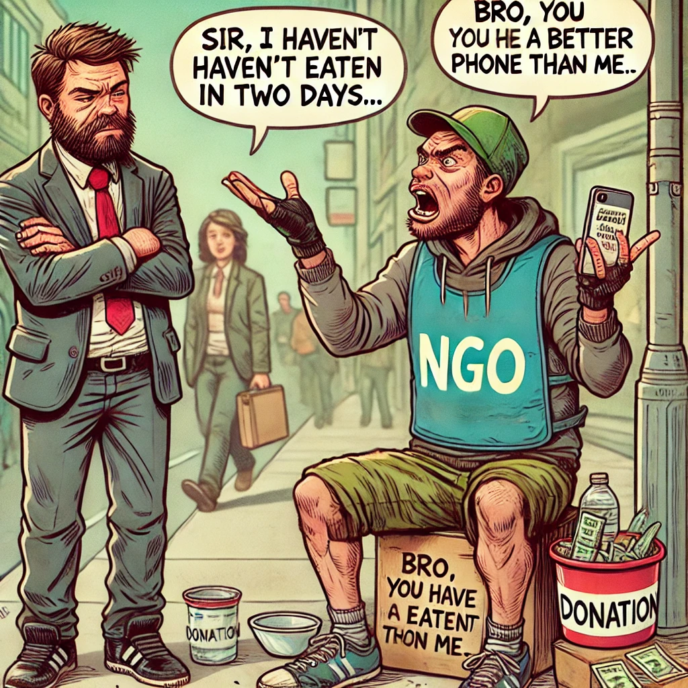

Help the Real Victims – Street Fundraisers Who Won’t Stop Asking for Your Money!
Every day, innocent pedestrians suffer from sudden attacks by overly friendly NGO representatives. These poor souls roam the streets, asking for donations without any transparency. They’ve got scripts, guilt-trips, and the persistence of a mosquito in a dark room. But today, we’re turning the tables! We are raising money for THEM. Why? Because they clearly need it—after all, they ask for money more than your broke friend at the end of the month. So, donate now! Or don’t. We’ll find you anyway.
Your donation will go towards
- Buying them new, stronger guilt-tripping techniques
- Training sessions on how to make people feel bad in under 2 minutes
- High-tech tracking devices so they never lose sight of a potential donor